About arc42
arc42, the template for documentation of software and system architecture.
Template Version 8.2 EN. (based upon AsciiDoc version), January 2023
Created, maintained and © by Dr. Peter Hruschka, Dr. Gernot Starke and contributors. See https://arc42.org.
1. Introduction and Goals
1.1. Requirements Overview
The project aims to develop a full-stack web application for a game named YOVI, communicating human players and automated agents. The following high level specifications must be in the final version of the application:
1.1.1. User Management
| ID | Description |
|---|---|
FR-01 |
The system shall allow users to register and authenticate (login/logout) to manage their personal profiles. |
FR-02 |
The system shall maintain a persistent history of matches played by each registered user. |
FR-03 |
The system shall provide a dashboard for users to view their statistics, including win/loss ratios and total games played. |
1.1.2. Gameplay (Web Frontend)
| ID | Description |
|---|---|
FR-04 |
The frontend shall implement the "Classic Version" of Game Y in a Player-vs-Machine (AI) mode. |
FR-05 |
The system shall support variable board sizes, allowing the player to define the dimensions before starting a match. |
FR-06 |
The UI shall allow the player to select from multiple game strategies or difficulty levels provided by the AI. |
FR-07 |
The frontend shall visualize the board using the coordinate systems (Barycentric or Index-based) defined in the YEN notation. |
1.1.3. Game Engine (Rust Module)
| ID | Description |
|---|---|
FR-08 |
The module shall provide a web service interface to receive game states and return move calculations. |
FR-09 |
The engine shall validate the current board state to determine if a match has been won, lost, or is still in progress. |
FR-10 |
The engine shall implement at least two distinct move-generation strategies for the AI. |
1.1.4. External Bot API
| ID | Description |
|---|---|
FR-11 |
The API shall expose a |
FR-12 |
The API shall provide endpoints for bots to retrieve user information and historical game data. |
FR-13 |
The API shall support parameters for bots to specify which game strategy the engine should utilize during a match. |
1.1.5. Data & Communication
| ID | Description |
|---|---|
FR-14 |
All communication between the TypeScript frontend and the Rust backend shall be conducted via JSON messages. |
FR-15 |
The system shall strictly adhere to the YEN notation for representing board layouts, player turns, and piece positions. |
1.2. Quality Goals
| Goal | Description |
|---|---|
Availability |
The application and its API must be publicly accessible and maintain high uptime for both web users and bot integrations. |
Usability |
The frontend should be intuitive, allowing users to easily toggle between game strategies and view their statistics without a steep learning curve. |
Performance |
The backend architecture should handle concurrent matches from both web users and API-based bots without significant latency. |
Security |
User data and match histories must be protected via secure authentication, ensuring users can only manage their own profiles. |
The top three (max five) quality goals for the architecture whose fulfillment is of highest importance to the major stakeholders. We really mean quality goals for the architecture. Don’t confuse them with project goals. They are not necessarily identical.
Consider this overview of potential topics (based upon the ISO 25010 standard):

You should know the quality goals of your most important stakeholders, since they will influence fundamental architectural decisions. Make sure to be very concrete about these qualities, avoid buzzwords. If you as an architect do not know how the quality of your work will be judged…
A table with quality goals and concrete scenarios, ordered by priorities
1.3. Stakeholders
| Role/Name | Contact | Expectations |
|---|---|---|
Development team |
yovi_en1a |
To receive clear requirements and timely feedback on builds. |
Players |
N/A |
To get an engaging application of the game that is stable and intuitive. |
Evaluators |
Archisoft |
To ensure the architectural integrity between the frontend (TypeScript) and backend (Rust) via the YEN notation. |
Micrati |
N/A |
To receive a functional prototype that meets all predefined success criteria. |
2. Constraints
2.1. Technical Constraints
Technical constraints define the specific technologies and tools that must be used.
| Constraint | Description |
|---|---|
Programming Languages |
Frontend must be TypeScript. The core Game Y logic (win verification/suggestions) must be Rust. |
Data Exchange |
All subsystem communication must use JSON formatted according to the YEN notation (size, turn, players, layout). |
Deployment & Runtime |
The system must be containerized with Docker and run on an Ubuntu Linux environment. |
External Connectivity |
The system must expose a documented Web API accessible by third-party bots for automated gameplay. |
2.2. Architectural Constraints
Architectural constraints are the high-level design requirements that dictate the system’s structure.
| Constraint | Description |
|---|---|
Subsystem Decoupling |
The system must be split into at least two distinct subsystems (Web App and Rust Module). They must remain independent and communicate only via web services. |
Strategy Extensibility |
The architecture must support multiple AI strategies and difficulty levels, selectable by the user or the bot via the API. |
Multi-Coordinate Support |
The system must handle both Barycentric (x,y,z) and Index-based (0…n) coordinate systems, ensuring correct mapping between the UI and the Engine. |
2.3. Organizational Constraints
Organizational constraints relate to the project management and academic requirements.
| Constraint | Description |
|---|---|
Academic Framework |
Must satisfy all criteria for the ASW assignment, including traceability and quality attributes. |
Team Workflow |
Mandatory use of Git for version control, featuring documented Code Reviews and Issue Tracking. |
Documentation Standard |
Architecture must be documented using the arc42 template and include Architectural Decision Records (ADRs). |
Evaluation Metrics |
The system must be evaluated on Availability and Observability (Monitoring) and Testing Coverage. |
2.4. Conventions
Conventions are the rules agreed upon by the team to ensure consistency.
| Convention | Description |
|---|---|
Language |
English is the mandatory language for code, documentation, and the API. |
API Documentation |
All endpoints must be fully documented. |
Modeling |
Diagrams must follow UML standards and be rendered using software such as PlantUML. |
Naming Conventions |
Follow standard TypeScript (camelCase) and Rust (snake_case) style guides respectively. |
3. Context and Scope
The YOVI_0 system (Game Y at UniOvi) is a distributed gaming platform designed to provide a competitive environment for both human players and automated agents. The system’s primary boundary lies between the user-facing web interface and the high-performance game logic engine implemented in Rust.
3.1. Business Context
The business context defines how YOVI interacts with external entities. The system acts as a standardized provider for both human players and third-party bots, ensuring interoperability through the YEN notation.
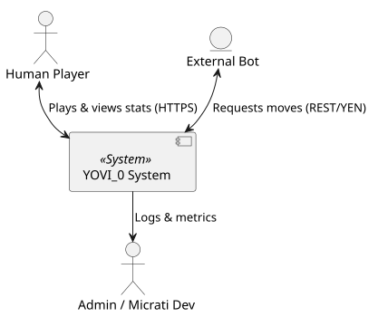
| Communication Partner | Inputs | Outputs |
|---|---|---|
Human Player |
Account registration data, game moves via hexagonal UI, and selection of AI strategy. |
Real-time board updates, personal performance statistics, and historical match records. |
External Bots |
RESTful API requests containing current board states in YEN notation. |
Calculated next moves in YEN notation and game-state validation. |
Micrati Developers / Admins |
Infrastructure configuration, CI/CD scripts, and Docker management. |
Application health metrics, observability logs, and test coverage reports. |
External Domain Interfaces:
-
YEN Notation: The primary domain language. It is a JSON-based representation ensuring interoperability between any external subsystem.
-
Coordinate Systems: Supports both Barycentric (x,y,z) and Index-based coordinates to accommodate different mathematical approaches by bot developers.
3.2. Technical Context
The YOVI_0 architecture follows a microservices-inspired model. All communication between the React-based frontend and the specialized services is handled over network calls.
| Interface | Protocol | Description |
|---|---|---|
Client Browser |
HTTPS / TCP |
The entry point for the user. Delivers the React SPA, which subsequently handles business logic via fetch/axios. |
Internal Services |
HTTP / JSON |
Communication between the Webapp, the Node.js User Service (Port 3000), the Node.js GameY API Gateway (Port 3001), and the underlying Rust GameY Engine (Port 4000). |
Public Bot API |
REST / JSON |
A public endpoint allowing third-party applications to interact with the game engine using the YEN standard. |
Mapping Input/Output to Channels:
-
Game Logic Flow: Move submissions from the Webapp or external bots are sent via JSON POST to the GameY API Gateway (Node.js). The gateway acts as a proxy, forwarding the YEN payload to the Rust Engine, which validates the move and returns the updated state back through the gateway.
-
Authentication Flow: Credentials are sent via HTTP POST to the User Service, which processes the persistence simulation and returns a status code.
-
Observability: Logs from Node.js and Rust are mapped to standard Docker output (
stdout), accessible via the technical management console.
4. Solution Strategy
4.1. Technology Decisions
The system architecture bridges mandated technical constraints with strategic choices focused on security, internationalization, and performance.
| Decision | Technology | Motivation |
|---|---|---|
Database |
MongoDB |
Fits the YEN Notation (JSON) format naturally and allows for flexible player statistics without rigid schemas. |
Hosting |
Microsoft Azure (VM) |
Selected for robust management and seamless GitHub Actions integration, utilizing "Azure for Students" credits. |
Backend API |
Node.js (Express) |
Implemented as |
Authentication |
JWT (Stateless) |
Allows services to verify user identity locally, reducing network latency and decoupling the service landscape. |
Security |
bcrypt |
Ensures secure password hashing before persistence in MongoDB, protecting user credentials against rainbow table attacks. |
Globalisation |
i18n |
Implemented to support multiple languages within the React frontend, ensuring accessibility for a global player base. |
4.1.1. Testing & Documentation Strategy
| Decision | Technology | Motivation |
|---|---|---|
API Docs |
OpenAPI / Swagger |
Provides a machine-readable contract at |
UI Testing |
Playwright |
Ensures complex hexagonal grid interactions remain functional across all browser engines. |
End-to-End |
Cucumber |
BDD-style verification of full game flows (login → move → win) for business logic consistency. |
Load Testing |
Gatling |
Validates that the Node/Rust stack can sustain high concurrent traffic. |
4.2. Top-level Decomposition
The system follows a microservices-oriented approach to ensure a clean separation of concerns:
-
Webapp (React): The presentation layer. It utilizes i18n for localization and translates UI interactions into YEN-compliant API calls.
-
User Service (Node.js): The identity provider (Port 3000). Uses bcrypt for secure credential storage and issues signed JWTs.
-
Game API (gameyapi - Node.js): The core orchestrator (Port 3001). A RESTful service managing active sessions and coordinating the flow between the UI and the logic engine.
-
Logic Engine (Rust): The computational core (Port 4000). A stateless service optimized for grid validation and AI calculations.
4.3. Achievement of Quality Goals
| Quality Goal | Strategy for Achievement |
|---|---|
Availability |
Resilient Middleware & Hosting: Implementing a custom DB health check in the User Service to auto-reconnect to MongoDB and deploying on Azure VMs to ensure the API remains reachable for both users and bots. |
Usability |
Internationalization (i18n): Integrating |
Performance |
Functional Offloading: Isolating CPU-intensive hexagonal grid logic and AI move generation in a dedicated Rust module. This prevents the Node.js event loop from blocking, maintaining low latency for concurrent matches. |
Security |
Data & Identity Protection: Utilizing bcrypt for securing user credentials at rest and JWT for stateless authorization, ensuring users can only manage their own profiles and access their specific match histories. |
5. Building Block View
The Building Block View provides a hierarchical decomposition of the YOVI_0 system. It describes the static structure, showing how the system is organized into subsystems and components, and how they interact with each other. This view is essential for understanding the overall architecture and the responsibilities of each part of the system.
5.1. Level 1: Overall System
Level 1 represents the highest level of abstraction, showing the main subsystems of the YOVI_0 system and their interactions. Each subsystem is responsible for a specific aspect of the system’s functionality, and they communicate with each other to fulfill the requirements of the project.
The following diagram shows the top-level decomposition of the YOVI_0 system into its four primary subsystems: the Frontend (Webapp), the User Management (User Service), the API Gateway (GameY API), and the Logic Engine (GameY).
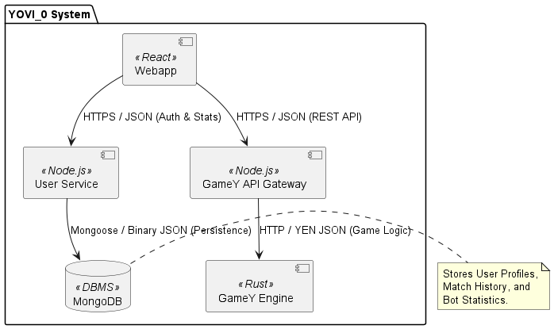
5.1.1. Component Descriptions
| Name | Responsibility |
|---|---|
Webapp |
The central UI and gateway. Manages hexagonal grid rendering and provides the documented API for external bots. |
User Service |
Handles administrative logic: user registration, session management, and persists match statistics to the DBMS. |
GameY API Gateway |
A Node.js proxy serving as the public REST API. It handles route management and passes JSON payloads to the underlying Rust engine. |
GameY Engine |
The high-performance "brain." Written in Rust for memory safety and speed; it validates game rules and provides AI moves via YEN notation. |
MongoDB |
The Document-based DBMS. It persists all non-transient data, chosen for its native support of JSON-like structures (perfect for YEN payloads). |
5.2. Level 2: Webapp (Frontend Subsystem)
The Webapp is a Single Page Application (SPA) built with React and Vite. It acts as the primary user interface and the orchestrator of requests between the User Service and the GameY API Gateway.
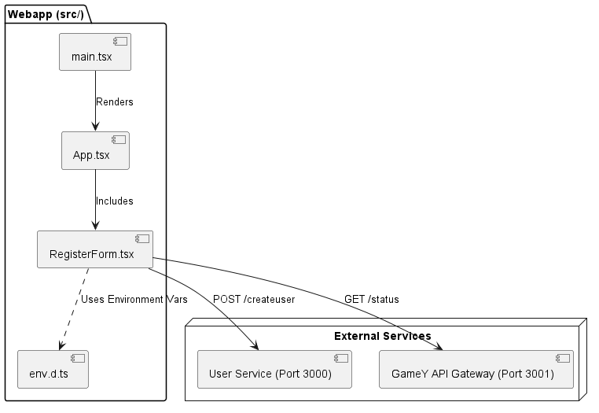
5.2.1. Component Descriptions
| Component | Detailed Responsibility |
|---|---|
main.tsx |
The Bootstrap of the application. It utilizes the react-dom/client library to find the root element in the HTML and injects the React application. It implements StrictMode to identify potential problems during development. |
App.tsx |
The Layout Orchestrator. It imports the global CSS and provides the high-level UI structure. It acts as a container for the different views (currently the RegisterForm). |
RegisterForm.tsx |
The Interaction Hub. This is the most complex component in this module. It manages local state for input data, loading animations, and error handling. It is responsible for the sequence: Submit → User Creation → Game Status Check. |
env.d.ts |
The Configuration Schema. It defines the ImportMetaEnv interface. This ensures that the TypeScript compiler recognizes custom environment variables used for service discovery, preventing runtime crashes. |
5.2.2. Internal dynamics and logic
The internal behavior of this module is driven by the state within RegisterForm.tsx:
-
Service Discovery: The module does not hardcode URLs. It uses an Environment-Aware approach:
-
It defaults to http://localhost:3000 (Users) and http://localhost:3001 (GameY API) for local development.
-
It allows overrides via VITE_API_URL and VITE_GAMEY_API_URL for production/containerized environments.
-
-
Asynchronous Lifecycle:
-
User Registration: Initiates a fetch POST request with a JSON payload containing the username.
-
Chained Validation: Upon a successful (200 OK) response from the User Service, it triggers the checkGamey() function. This ensures that the player is only notified that "Game is ready" if the API Gateway is reachable.
-
-
Resilience: The UI is designed to be fail-safe. If the GameY API is down, the user is still successfully registered, but the system displays a "Game is not ready" warning to manage user expectations.
5.3. Level 2: GameY Engine (Logic Subsystem)
The GameY Engine is a high-performance Rust subsystem responsible for the rules of the "Game of Y". It is structured as both a Library (lib.rs) for core logic and a Binary (main.rs) that provides a Command-Line Interface (CLI) and an HTTP Bot Server.
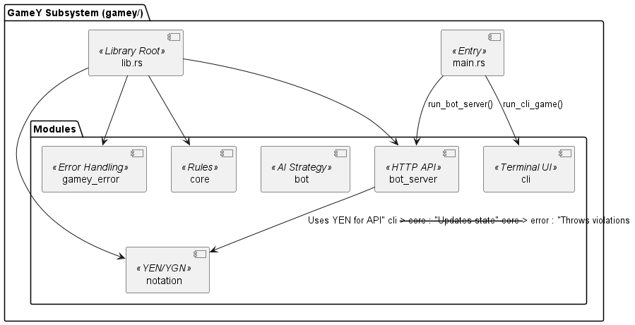
5.3.1. Component Descriptions
| Module | Detailed Responsibility |
|---|---|
main.rs |
Application Entry Point. Uses clap to parse CLI arguments. It determines the execution mode: Human (local CLI), Computer (local vs Bot), or Server (HTTP API for the Webapp). |
lib.rs |
Library Root. The central exported interface. It organizes the crate into public modules and provides the high-level GameY struct used to manipulate the triangular board. |
core |
The Rules Engine. Implements the triangular board mathematics, coordinate systems (Barycentric/Index), and the connection-based win conditions. |
bot_server |
The Gateway. Uses tokio to run an asynchronous HTTP server. It allows the Webapp to request moves via REST, serving as the bridge between the React frontend and the Rust logic. |
bot |
The Intelligence. Contains the GamerBot and the YBotRegistry. It implements the strategies used to calculate the next optimal move for a computer player. |
notation |
The Interoperability Layer. Implements YEN (Y Exchange Notation). It defines a JSON-serializable format for board layouts (e.g., "B/BR/.R."), inspired by chess’s FEN. |
cli |
Interactive Shell. Provides a rich terminal experience using rustyline. It supports board rendering, move history, and saving/loading game states to files. |
gamey_error |
Domain Safety. Defines the GameYError enum using thiserror. It strictly enforces game rules (e.g., Occupied, InvalidPlayerTurn) and ensures system resilience. |
5.3.2. Internal dynamics and logic
The GameY module operates through distinct execution patterns:
-
Stateful CLI Loop: In cli.rs, the run_cli_game function maintains an interactive loop. It captures user indices (e.g., "5"), converts them to coordinates, and applies moves to the GameY state. It supports "meta-commands" like save, load, and show_coords.
-
Stateless Server Pattern: When running in Mode::Server, the engine becomes a stateless API. It receives a YEN payload from the Webapp, reconstructs the game state momentarily in memory, calculates the AI’s response via the bot module, and returns the new state.
-
Strict Error Enforcement: Every action passes through the gamey_error module. If a player (or the Webapp) attempts an illegal move (such as placing a piece on an Occupied cell), the engine returns a specific error variant rather than allowing an inconsistent game state.
-
Serialization (YEN): The notation/yen.rs module ensures that complex triangular board states can be compressed into a single string. This is critical for the "Building Block" connection between the Webapp and GameY, as it minimizes the data payload sent over HTTP.
5.4. Level 2: User Service
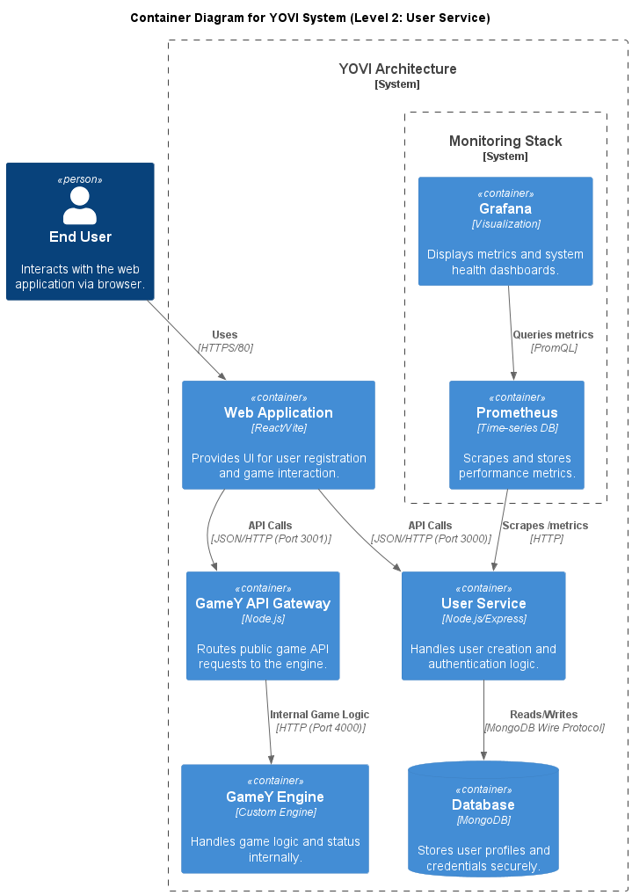
5.4.1. Component Responsibilities
| Component | Technology | Responsibility |
|---|---|---|
Express Entry Point |
Node.js / Express 5.x |
Orchestrates the business logic for |
Security Manager |
bcrypt |
Ensures "Security by Design" by hashing passwords. |
Database Driver |
MongoDB Driver 7.x |
Handles asynchronous communication with the |
Metrics Provider |
express-prom-bundle |
Bridges the application to the Prometheus monitoring instance. |
6. Runtime View
6.1. Scenario 1: Human Player vs. AI (Move Execution)
Description: This scenario illustrates the core game loop when a human player interacts with the frontend to play against the system’s AI. It highlights the transformation of UI interactions into the standardized YEN notation and the delegation of logic to the high-performance Rust engine.
Notable Aspects: The Webapp acts as a pure presentation layer. Move validations are routed through the GameY API (Node.js), which proxies the request to the GameY Engine (Rust). All coordinate conversions and rule logic are strictly handled by the Rust engine.
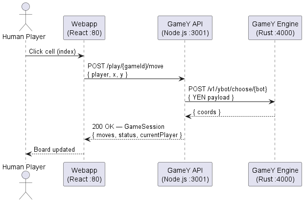
6.2. Scenario 2: Human Player vs. Human Player (Local Hot-Seat Execution)
Description: This diagram illustrates the turn flow between two human players playing on the same device (shared screen). It demonstrates how a move made by one player is validated and saved in the API’s memory, seamlessly initiating the next player’s turn on the same client.
Notable Aspects: Unlike the "Human vs. AI" scenario, the GameY Engine (Rust) is not invoked here, as the Node.js API handles internal win-condition checks (Union-Find). The GameY API acts as the central state manager using an in-memory session. It updates the board state internally and returns the 200 OK response to the shared client without hitting the database or requiring WebSocket infrastructure.
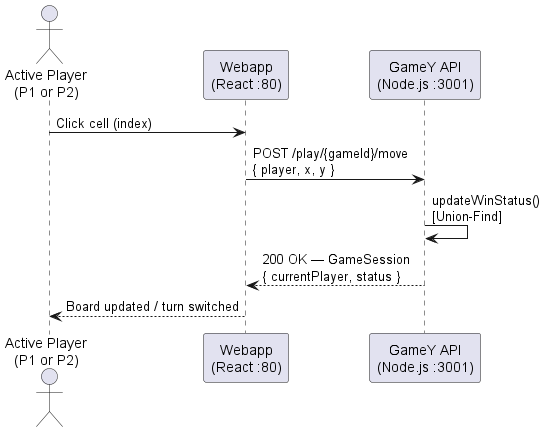
6.3. Scenario 3: Match Conclusion and Statistics Persistance
Description: This scenario demonstrates the data flow when a game concludes (either by a win, loss, or draw).It shows the interaction between the Frontend and the GameY API, which detects the win and persists the result directly to MongoDB.
*Notable Aspects:*Win detection is handled entirely within the GameY API via the updateWinStatus() function (Union-Find in JavaScript), without invoking the Rust engine. Upon detecting a winner, the GameY API writes the result directly to MongoDB before returning the final game state to the Webapp.
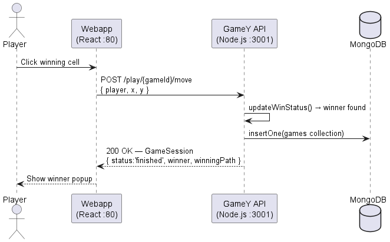
6.4. Scenario 4: User Authentication and Login Flow
Description: This scenario illustrates the security and session management architecture of the system. It details how the system handles a user login request, verifies credentials, and establishes a secure session for the player.
Notable Aspects: The GameY Engine is bypassed entirely for this process, as it is strictly dedicated to game logic. This interaction occurs purely between the Webapp (Frontend), the User Service (Node.js), and the Database (MongoDB). It demonstrates a clean separation of concerns where the User Service handles all identity and access management.
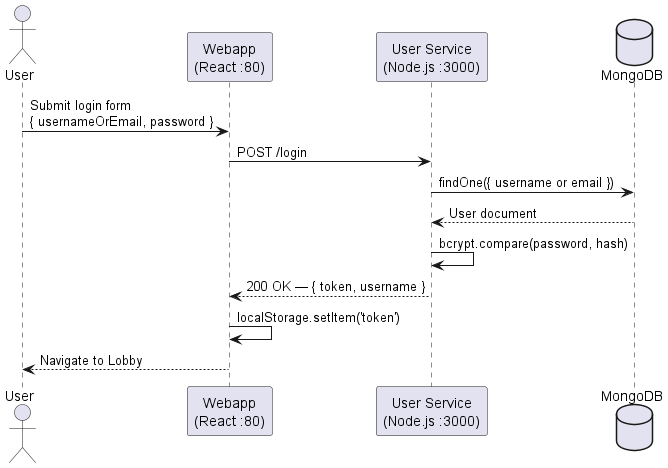
6.5. Scenario 5: Error Handling - Invalid Move Validation
Description: This exception scenario demonstrates system resilience. It shows what happens when an invalid move (for example, attempting to play on an already occupied coordinate) is submitted by the user.
Notable Aspects: The GameY API (Node.js) acts as the first validation layer, immediately rejecting moves with a wrong player turn or an already-occupied cell before forwarding anything to the Rust engine. If the move passes this check, the YEN payload is sent to the GameY Engine, which handles deeper rule violations such as malformed board states. The Webapp reverts any optimistic UI update and displays a warning to the user without crashing the game state.
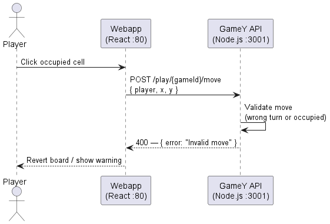
7. Deployment View
7.1. Infrastructure Level 1: Azure Cloud Environment
7.1.1. Motivation
The system runs on a single Azure Virtual Machine (Ubuntu 24.04 LTS). Azure was chosen for its reliability and straightforward VM provisioning. A single VM keeps costs low while still resembling a real production environment. All components are containerised with Docker and orchestrated via Docker Compose, ensuring identical behaviour in development and production. Deployments are automated through GitHub Actions, pulling pre-built images from the GitHub Container Registry (ghcr.io/arquisoft/yovi_en1a).
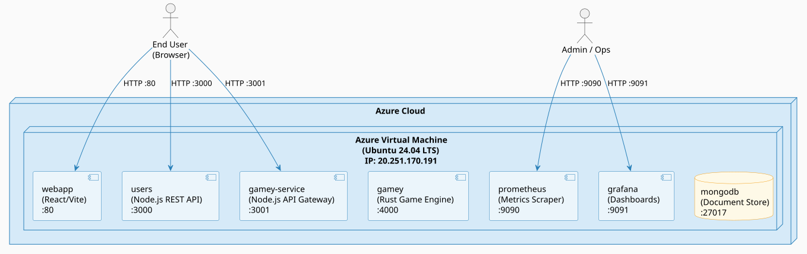
7.2. Infrastructure Level 2: Container Orchestration (Docker Compose)
7.2.1. Motivation
Docker Compose manages all containers in a single configuration file. All services run on a shared internal bridge network (monitor-net) so they can communicate without exposing unnecessary ports. Container images are pulled from the GitHub Container Registry.
The webapp receives backend URLs at build time via Vite environment variables (VITE_API_URL, VITE_GAMEY_URL, VITE_GAMEY_API_URL). The gamey-service Node.js gateway acts as an intermediary between the webapp and the Rust gamey engine, handling protocol and API translation. MongoDB includes a health check so dependent services only start once the database is ready.
7.2.2. Level 2a: Application Services
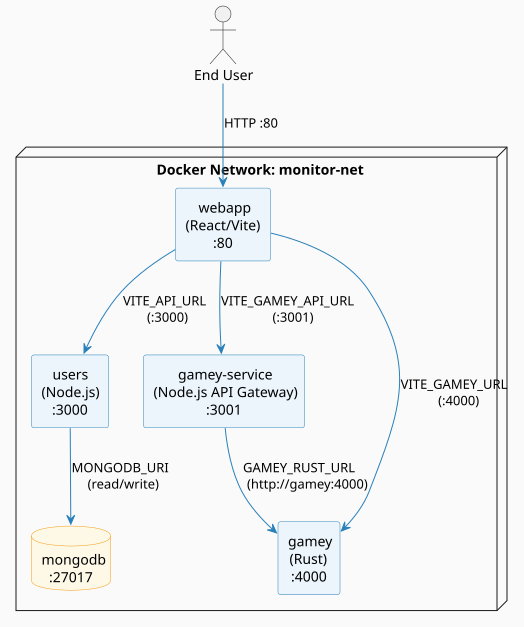
7.2.3. Level 2b: Observability Stack
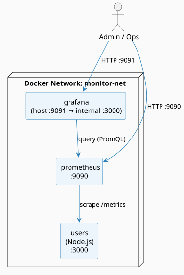
7.3. Mapping of Building Blocks to Infrastructure
| Building Block | Infrastructure Element | Description |
|---|---|---|
webapp |
Docker Container (React/Vite) |
Serves the compiled frontend. Accessible on Port 80. Backend URLs are baked in at build time via Vite env vars. |
users |
Docker Container (Node.js) |
Handles identity, match history, and stats. Accessible on Port 3000. Requires MongoDB to be healthy before starting. |
gamey-service |
Docker Container (Node.js API Gateway) |
Intermediary gateway between the webapp and the Rust game engine. Accessible on Port 3001. Forwards requests to |
gamey |
Docker Container (Rust) |
Core game logic, move validation, and win detection. Accessible on Port 4000. |
mongodb |
Docker Container (MongoDB) |
Persistent document store for user profiles and match history. Includes a health check ( |
prometheus |
Docker Container (prom/prometheus) |
Scrapes metrics from |
grafana |
Docker Container (grafana/grafana) |
Visualises metrics from Prometheus. Internal port 3000 is mapped to host port 9091 to avoid conflict with the |
7.4. Infrastructure Level 3: Data Persistence
7.4.1. Motivation
Data must survive container restarts and redeployments. Prometheus and Grafana use bind mounts so their configuration lives directly in the repository and is version-controlled. MongoDB uses a named Docker volume so that user and game data persists independently of the container lifecycle.
| Element | Storage Strategy | Path / Volume |
|---|---|---|
Prometheus Config |
Docker Bind Mount |
|
Grafana Dashboards |
Docker Bind Mount |
|
User & Game Data |
Docker Named Volume ( |
Managed by Docker. Mounted at |
7.5. Network and Connectivity
All containers communicate over the monitor-net bridge network (Docker default bridge driver). The following ports are exposed to the host:
-
Port 80: Webapp entry point (React/Vite frontend).
-
Port 3000: Users REST API (consumed by webapp and external bots).
-
Port 3001: Gamey-service API Gateway (consumed by webapp).
-
Port 4000: Rust Game Engine (consumed by gamey-service and directly by webapp for real-time moves).
-
Port 27017: MongoDB - exposed to the host in port 27017.
-
Port 9090: Prometheus - metrics scraping and admin queries.
-
Port 9091: Grafana dashboards (remapped from internal port 3000).
7.5.1. Startup Dependencies
MongoDB must pass its health check (mongosh --eval "db.adminCommand('ping')", every 5 s, up to 5 retries) before the users service starts. The webapp waits for both users and gamey-service to be available. The gamey-service waits for gamey to be available.
8. Cross-cutting Concepts
8.1. Domain Concepts
8.1.1. Game Y and Hexagonal Grids
The core domain of the application revolves around the "Classic Version" of Game Y. The game environment is based on variable-sized hexagonal boards. The system supports multiple coordinate representations for these grids: * Barycentric Coordinates (x,y,z): Used to represent three-dimensional positioning in a 2D hexagonal space. * Index-based Coordinates (0…n): Linear representation for simpler indexing in arrays or matrices.
8.1.2. YEN Notation
All game states are uniformly formatted using the YEN Notation, which dictates how board sizes, player turns, and piece positions are serialized. This ensures consistent state representation across the Frontend, the Logic Engine, and external bots.
A YEN string encodes the complete game state in a compact, human-readable format. For example, on a 3×3 board where Blue has played two cells and Red has played one:
B/BR/.R.-
B— It is Blue’s turn. -
BR/— Row 1 contains a Blue piece, a Red piece, then the row separator. -
.R.— Row 2 contains an empty cell, a Red piece, and another empty cell.
8.2. Architecture and Design Patterns
8.2.1. Microservices Architecture
The concrete service breakdown (Webapp, User Service, Logic Engine) is described in Sections 4 and 5. The cross-cutting design rules that govern the microservice decomposition are:
-
Independent Deployability: Each service is packaged as its own Docker image with an isolated build pipeline. A new release of one service never requires redeploying another.
-
Strict Network Boundaries: Services communicate exclusively over defined HTTP endpoints. There are no shared databases, in-process calls, or file-system dependencies between services.
-
Single Responsibility: Each service owns exactly one concern — the Logic Engine owns game rules, the User Service owns identity and persistence, and the Webapp owns presentation. Business logic must not leak across service boundaries.
8.2.2. Stateless Processing
The Logic Engine is intentionally stateless. Current game states (in JSON format) are passed within each request, allowing the engine to calculate AI behavior or determine win/loss states without storing active match sessions in memory.
8.3. Communication and Integration Concepts
8.3.1. RESTful JSON APIs
Communication both internally (between subsystems) and externally (third-party bots) relies fully on HTTP REST APIs utilizing JSON.
* Internal APIs: The User Service and Logic Engine communicate with the Webapp using predefined JSON schemas strictly validating YEN notation.
* External Bot Interface: The system provides dedicated endpoints (e.g., a play method) for third-party bots to interact with the engine.
8.3.2. Asynchronous Push Communication (WebSockets)
For real-time interactions, particularly in the "Human vs. Human" multiplayer scenario, the architecture envisions asynchronous push communication. Instead of relying on inefficient client-side polling, the Node.js User Service will actively push game state updates (e.g., opponent moves) directly to the connected React clients via WebSockets. * Current State: Asynchronous push communication is planned but not yet implemented. The current system relies exclusively on RESTapi calls. * Future Updates: Once WebSockets (e.g., via Socket.IO) are integrated, this section will be expanded with the specific event structures and network flow diagrams.
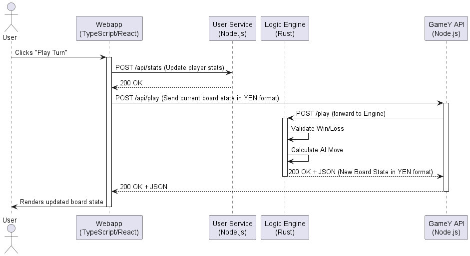
8.4. Data Persistence Concepts
8.4.1. Data Mapping Strategy
The technology choice (MongoDB) is documented in Sections 4 and 7. The cross-cutting design rule for persistence is how domain relationships are mapped to documents:
-
User Documents are stored as flat, self-contained documents in the
userscollection (fields:username,email,passwordhash,createdAt). No embedding of child objects is used at this stage. -
Match History (planned): Match results will be stored as separate documents in a
matchescollection, referencing the participating users by their_idrather than embedding the full user object. This avoids data duplication and keeps user updates (e.g., profile changes) consistent without cascading writes. -
Design Rule — Referencing over Embedding: Whenever two entities have independent lifecycles (e.g., a user exists regardless of any single match), the system favours document references (
ObjectIdforeign keys) over nested embedding. Embedding is reserved for data that is never queried or updated independently (e.g., a list of coordinates within a single match snapshot).
8.5. Security Concepts
8.5.1. User Authentication and Password Storage
-
Registration: Players register with a username, email, and password. The User Service hashes all passwords using bcrypt (cost factor 10) before persisting them to MongoDB. Plaintext passwords are never stored.
-
Login: Upon login the User Service retrieves the stored hash and verifies it against the submitted password via
bcrypt.compare.
8.5.2. Session Management
-
Current State: Token-based session management (e.g., JWTs) is not yet implemented. The runtime scenario in Section 6.4 already envisions a JWT-based flow (generate token on login → store in Session Storage → attach to subsequent requests). This will be implemented in a future iteration and this section will be updated accordingly.
-
Planned Approach: The User Service will issue a signed JSON Web Token (JWT) upon successful login. The React Webapp will store the token in the browser’s Session Storage and attach it as an
Authorization: Bearer <token>header on every API request. The User Service will validate the token on protected endpoints.
8.5.3. Configuration and Secrets Management
Service configuration (ports, upstream URLs, database connection strings) is managed through environment variables that are injected via docker-compose.yml.
| Variable | Service | Example Value |
|---|---|---|
|
User Service |
|
|
GameY API |
|
|
Webapp (build-time) |
|
|
User Service |
|
Warning
|
The current setup uses plain environment variables in |
8.5.4. Data Scoping and Privacy
-
Data Privacy: Requests are secured to ensure players can only access and modify their own personal profiles and match histories.
8.5.5. CORS (Cross-Origin Resource Sharing)
Because the Webapp (Port 80) communicates with backend APIs on different ports (3000, 3001, 4000), CORS must be configured explicitly.
-
User Service (Node.js): Implements a strict origin whitelist using the
corsmiddleware. Allowed origins are configured via theALLOWED_ORIGINSenvironment variable (comma-separated). By default, onlylocalhostorigins are permitted. Requests from unlisted origins are rejected with an error. -
GameY API (
gameyapi): Currently uses a permissive CORS policy (cors()with no origin restriction) to facilitate external bot integration. This will be tightened before production deployment.
8.5.6. Rate Limiting
|
Note
|
Rate limiting is not yet implemented. Since the system exposes a public API for external bots (see Section 3), it is susceptible to abuse or accidental overload. Rate limiting middleware (e.g., |
8.6. User Experience (UX) Concepts
8.6.1. State Management and Rendering
In the Frontend Webapp, complex match states and user actions are managed reactively. * State Trees: React manages the active game properties (board layout, opponent type, current turn) locally to provide instant visual feedback without blocking for server responses during non-validating actions. * Hexagonal UI Representation: The UI seamlessly maps the engine-provided mathematical coordinate arrays (Barycentric or Index-based) onto visual hexagonal grids for intuitive gameplay.
8.7. Quality and Reliability Concepts
8.7.1. Logging Strategy
All services emit logs exclusively to stdout/stderr, which allows the Docker container runtime to collect and forward them transparently. No dedicated log-aggregation sidecar is required for the current setup.
-
Rust Logic Engine (
gamey): Uses thetracingcrate withtracing_subscriber. This produces structured, level-based log output (INFO,DEBUG,WARN) that is machine-readable and can be forwarded to an aggregator (e.g., Loki/Grafana) in a future step. Fatal startup errors are written tostderrviaeprintln!. -
Node.js Services (
users,gameyapi): Use the built-inconsole.log/console.warn/console.errorAPI. Output is written directly to the process stdout/stderr, which Docker captures. Log lines are prefixed with context tags (e.g.,[CREATE],[MOVE],[BOT]) to aid filtering. -
React Frontend (
webapp): Browserconsole.*calls are available during development. No log forwarding to the backend occurs from the client.
|
Note
|
Centralized log aggregation (e.g., shipping Docker logs to a Loki stack alongside the existing Prometheus/Grafana setup) is planned for a later iteration. |
8.7.2. Error Handling and Cross-Service Error Propagation
The system uses a layered error propagation model based on standard HTTP semantics. The example described in Scenario 5 (Section 6.5) illustrates a concrete instance of this pattern.
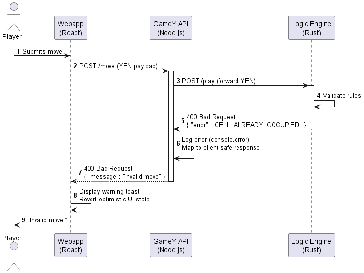
The concrete error handling layers are:
-
Rust Logic Engine: Returns precise HTTP error codes (
400 Bad Requestfor invalid YEN/rule violations,500 Internal Server Errorfor unexpected failures). The JSON body contains a machine-readableerrorfield. -
Node.js Middleware (GameY API / User Service): Catches errors from upstream Rust calls, logs them via
console.error, and maps them to sanitized, client-facing JSON responses. Internal error details (stack traces, Rust error messages) are not forwarded to the browser. -
React Frontend: Reads HTTP status codes from API responses. Non-2xx responses trigger UI-level feedback (e.g., warning toasts, reverting optimistic state updates). The Webapp never crashes on expected error payloads.
8.7.3. Observability and Monitoring
To satisfy availability evaluation metrics, the system incorporates rigorous operational monitoring: * Metrics Ingestion: Both the Node.js API and the Rust Gamey Engine emit structured operational metrics. * Visualization: Prometheus scrapes system health, latency, and throughput metrics, which are then aggregated and visualized using Grafana dashboards.
8.7.4. Testing and Quality Assurance
System reliability is continuously verified through multiple layers of testing: * Multi-Layer Testing: The system utilizes unit tests for individual algorithmic checks (especially Rust logic), integration tests for API endpoints, and End-to-End (E2E) UI tests for critical user journeys. * Static Analysis: Code quality and security are strictly evaluated via SonarCloud against defined Quality Gates prior to any merge.
8.7.5. Continuous Integration and Deployment (CI/CD)
The development pipeline is automated natively with GitHub Actions:
* CI Pipelines: Push events and pull requests trigger automated test suites and SonarCloud evaluations.
* CD Pipelines: Upon a successful release merge, Docker images are automatically built from each service’s Dockerfile and orchestrated on the production server via docker-compose (see Sections 2 and 7 for the containerization details).
8.8. Development and Operational Concepts
8.8.1. Documentation Strategy
The architecture documentation follows a strict Docs-as-Code approach: * AsciiDoc & Arc42: All architectural documentation is written in AsciiDoc, structured entirely according to the arc42 template. This approach ensures technical documentation lives alongside the source code in version control. * PlantUML: As dictated by our conventions, all architectural diagrams and models must comply with UML standards and are rendered programmatically using PlantUML.
8.8.2. Collaboration and Source Control
-
Git Workflows: Employs pull requests, mandatory code reviews, and issue tracking.
-
Traceability: Documentation must constantly be maintained following the arc42 structure (including ADRs) to comply with academic quality evaluation criteria.
9. Architecture Decisions
This section contains the most important architectural decisions made during the development of the Yovi (Game Y) application. The decisions are documented as lightweight Architecture Decision Records (ADR). Each decision outlines the context, the chosen solution, considered alternatives, and the resulting consequences.
9.1. ADR: MongoDB as DBMS
We need a database for the game backend to store player data, game sessions, and other game-related entities. The data model is expected to evolve during development.
We decided to use MongoDB as our primary Database Management System (DBMS). Unlike relational databases such as MySQL, MongoDB uses a document model based on BSON/JSON-like structures. It integrates well with web applications and is suited for self-contained entities like players and game sessions.
The flexible schema of MongoDB makes it easier to adapt the data model and acts as a natural fit for our JSON-based web backends. The primary alternative, MySQL, was considered due to the team’s familiarity with it, but MongoDB’s schema flexibility was deemed more important. As a consequence, the team requires some time to learn MongoDB, and the system is less suited for complex relational queries compared to SQL databases.
9.2. ADR: Microsoft Azure as VM Host
The project requires a reliable and scalable environment to host the application and its associated services, primarily our Docker containers and Node.js instances. The chosen cloud provider needs to offer robust Virtual Machine management, global availability, and integration with DevOps workflows.
We selected Microsoft Azure (Azure Virtual Machines) to host our infrastructure. Azure provides seamless integration with GitHub Actions for our CI/CD pipelines and offers "Azure for Students" credits, which fits the constraints of our academic project. It also provides a web portal for monitoring VM health.
While alternatives like AWS (Amazon Web Services) and Google Cloud Platform (GCP) are prominent in the cloud landscape, standardizing on Azure simplifies our deployment pipeline without introducing a steeper learning curve regarding billing or disconnecting us from existing academic subscriptions. Using Azure still requires us to monitor credit usage and accept specific Azure CLI tools.
9.3. ADR: JWT Authentication
The application uses a microservices architecture (users-service and gameyapi). We need a secure, stateless method to share user identity across these boundaries without querying a central database for session validation on every API call.
We chose JSON Web Tokens (JWT) for authentication. Upon a successful login, the users-service generates a signed token containing the user’s ID and username. Secret management uses .env files locally and GitHub Secrets in production to protect the JWT_SECRET. Consumer services like gameyapi verify the token locally using this shared secret.
Session-based authentication was discarded because it requires centralized stores like Redis, which increases latency. Opaque tokens were bypassed because they require resource servers to constantly contact the authentication service. JWTs improve performance through localized verification and allow horizontal scalability. However, this introduces security risks if the secret is compromised, and prevents instantly revoking specific active sessions.
9.4. ADR: Gatling as Load Testing Tool
The game services must handle concurrent players without performance degradation. We require load tests that simulate realistic user flows crossing multiple microservices.
We selected Gatling for load testing. Gatling simulations are written in a Scala/Java Domain-Specific Language (DSL) and execute against our staging environment during CI pipelines. Pipelines fail automatically if p95 response times or error rates exceed agreed thresholds. Gatling generates HTML reports after execution.
While other tools like JMeter use an XML-heavy format that is difficult to version-control, and options like k6 do not leverage our team’s existing JVM expertise, choosing Gatling ensures simulations live directly in version control and robustly handle stateful user flows. The primary downside is the needed Scala ramp-up time for developers lacking JVM experience.
9.5. ADR: Behavior and End-to-End Testing with Cucumber
To validate that backend and API logics execute according to defined business rules, we required a testing framework capable of matching behavioral specifications to executable code.
We integrated Cucumber for our API-level and functional End-To-End (E2E) tests. Cucumber allows us to write tests using natural language formats (Given/When/Then), directly bridging specifications and code assertions. This ensures our APIs behave exactly as requested by stakeholders.
9.6. ADR: Playwright for Browser Automation and UI Testing
The application provides a web frontend managing registration, authentication, and gameplay. To ensure user interface flows behave correctly across varied browsers, we need an automated browser testing setup to complement our Cucumber scenarios.
We implemented Playwright as our frontend UI testing framework. Tests run in TypeScript against Chromium, Firefox, and WebKit to catch browser-specific rendering flaws. In scenarios where login is not tested, the JWT is injected directly to maintain execution speed.
Compared to tools like Selenium, which can be slower with excessive setup boilerplate, or Cypress, which is often tightly bound to Chromium and challenges cross-browser testing needs, Playwright effectively centralizes our test suite. It reduces flakiness through built-in auto-waiting mechanisms. The trade-off is the inherent fragility of UI tests and the extended CI execution times required for multiple browser engines.
9.7. ADR: bcrypt as Password Hashing Library
The users-service handles player registration and login. Passwords must be hashed securely to prevent raw credentials from being exposed in case of a database breach.
We standardized on bcrypt as the main library to hash and verify passwords. Passwords are hashed with salt and never persist as plain text. Upon login, bcrypt evaluates the injected password against the stored hash before issuing a JWT.
Fast hashing algorithms like MD5 or SHA-256 without key stretching were disqualified because they are easily cracked by modern hardware. Argon2 was considered but passed over due to its smaller ecosystem in Node.js compared to bcrypt. While bcrypt’s scalable workload provides strong security, developers must use its asynchronous methods to prevent blocking the Node.js event loop.
9.8. ADR: i18n for Internationalization
The game aims to reach players across multiple language regions. Hardcoding strings into React components requires expensive refactoring later.
We integrated react-i18next as our internationalization framework early in development. All user-facing strings are extracted into locale-specific JSON files, allowing frontend code to reference descriptive translation keys. English acts as the fallback locale when a token is missing.
By avoiding hardcoded layouts, we uncoupled the translation process from the codebase. Translators can manage the JSON files independently. This requires strict discipline from the frontend team to extract new strings immediately and maintain organized key naming conventions.
9.9. ADR: gameyapi as Node.js REST API Service
The application needs a backend orchestration service to manage game sessions, route player moves to the bot engine, and store match results in the database.
We built the gameyapi as a Node.js REST API utilizing the Express framework. It communicates via JSON and trusts authenticated JWTs. The service stores ongoing game sessions in memory and only persists completed classic-mode games to MongoDB.
Python with FastAPI was considered for its async capabilities, but the team opted for Node.js to reuse JavaScript tooling and knowledge. A pure Rust solution was discarded because routing API traffic is faster to iterate on in JavaScript, while calculation burdens remain delegated to the Rust service. This design capitalizes on Node’s async I/O strengths, but risks losing active in-memory games if the Node process restarts unexpectedly.
10. Quality Requirements
10.1. Quality Tree
The following quality tree summarizes the most important quality goals and links them to the concrete scenarios described in the next section. Higher-priority goals are listed first.
| Quality Category | Sub-quality | Related Scenario(s) |
|---|---|---|
Performance |
Response time, throughput |
QS-01, QS-02 |
Usability |
Learnability, feedback clarity |
QS-03, QS-04 |
Reliability |
Availability, fault tolerance |
QS-05, QS-06 |
Security |
Authentication, data protection |
QS-07, QS-08 |
Maintainability |
Modifiability, testability |
QS-09, QS-10 |
10.2. Quality Scenarios
10.2.1. QS-01: Board updates are reflected in real time for all players
Source |
Player placing a tile during a multiplayer game session |
Stimulus |
A player places a tile on the board |
Environment |
System under normal load, one or two players depending on the game mode |
Artifact |
Game server and frontend rendering layer |
Response |
The placed tile appears on all other players' boards |
Response Measure |
The board update is visible to all participants within 500 milliseconds in at least 95% of placements |
10.2.2. QS-02: System handles peak concurrent load
Source |
Multiple players starting game sessions simultaneously |
Stimulus |
100 concurrent users are playing active games at the same time |
Environment |
Peak usage period |
Artifact |
Backend services and database layer |
Response |
All game sessions continue without interruption; no board state is lost or corrupted |
Response Measure |
Error rate stays below 1%; average response time stays below 2 seconds |
10.2.3. QS-03: New user can start a game without prior instructions
Source |
First-time user with no prior knowledge of the system |
Stimulus |
User opens the application and attempts to start a game |
Environment |
Standard browser, no tutorial shown beforehand |
Artifact |
Frontend UI and onboarding flow |
Response |
The user finds the game lobby, joins or starts a game, and successfully places their first tile |
Response Measure |
At least 80% of test users place their first tile within 3 minutes without external help |
10.2.4. QS-04: Player receives clear feedback when a tile placement is invalid
Source |
Player during an active game session |
Stimulus |
Player attempts to place a tile in a position not allowed by the rules |
Environment |
Normal gameplay, with optional features |
Artifact |
Frontend validation and feedback layer |
Response |
The invalid placement is visually indicated |
Response Measure |
No raw error message or silent failure occurs; feedback is shown within 200 milliseconds of the attempt |
10.2.5. QS-05: Turn is skipped automatically when the time limit expires
This is part of an optional improvement we will next implement:
Source |
Game timer running on the server |
Stimulus |
A player does not place a tile before their turn time limit expires |
Environment |
Active multiplayer or single-player game session |
Artifact |
Turn management logic in the game server |
Response |
The player’s turn is skipped and the next player’s turn begins without manual intervention |
Response Measure |
The turn transition happens within 1 second of the timer expiring in 100% of cases; the board state remains consistent for all players |
10.2.6. QS-06: Application is available during expected usage hours
Source |
End users accessing the system at any time |
Stimulus |
User attempts to access the application |
Environment |
Non-maintenance period, standard operating conditions |
Artifact |
Deployment infrastructure and services |
Response |
The application loads and is fully functional |
Response Measure |
System availability is at least 99% measured monthly, excluding scheduled maintenance windows |
10.2.7. QS-07: Unauthorized users cannot access protected resources
Source |
Unauthenticated or malicious external actor |
Stimulus |
Attempt to access player data or game state via the API without a valid session token |
Environment |
Any environment, including production |
Artifact |
API authentication and authorization layer |
Response |
The request is rejected with an appropriate HTTP error (401 or 403) |
Response Measure |
Zero successful unauthorized accesses to protected endpoints in security audits |
10.2.8. QS-08: Passwords and sensitive data are stored securely
Source |
Developer or database administrator |
Stimulus |
Inspection of the data stored in the database |
Environment |
Any environment where user accounts exist |
Artifact |
User management service and persistence layer |
Response |
No plaintext passwords or sensitive tokens are found in storage. |
Response Measure |
All passwords are hashed with a modern algorithm using bcrypt, no plaintext credentials exist in any table or log |
10.2.9. QS-09: A developer can add a new tile type with limited effort
For optional requirements and possible extensions, the application must be scalable.
Source |
Developer extending the system |
Stimulus |
A new tile shape or type needs to be added to the game |
Environment |
Development environment, working codebase |
Artifact |
Game logic module and tile configuration layer |
Response |
The new tile type appears correctly on the board and follows placement rules |
Response Measure |
The change requires modifications in no more than 3 files and can be completed in under 2 hours by a developer familiar with the codebase |
10.2.10. QS-10: The test suite covers critical game logic
Source |
Development team running CI pipeline |
Stimulus |
A pull request is submitted with changes to the board or tile placement logic |
Environment |
Automated CI environment with GitHub Actions. |
Artifact |
Unit and integration test suite |
Response |
The pipeline runs all relevant tests and reports pass or fail clearly |
Response Measure |
Code coverage for core game logic modules is at least 80%; the CI pipeline completes in under 10 minutes |
11. Risks and Technical Debts
The following table lists the identified technical risks and technical debts within the YOVI_0 architecture. A Risk describes a potential future problem (e.g., security vulnerabilities or system overload), while a Technical Debt represents incomplete implementations or shortcuts taken during development that need to be refactored before a production release. The items are ordered by their priority and potential impact on the system.
| Priority | Type | Name & Description | Mitigation Strategy / Next Steps |
|---|---|---|---|
High |
Risk |
Missing Rate Limiting on Public API |
Implement rate-limiting middleware (e.g., |
High |
Risk |
Permissive CORS Policy |
Tighten the CORS configuration by implementing a strict origin whitelist for the GameY API, similar to the |
Medium |
Debt |
Runtime Secrets Management |
Migrate the runtime environment to use native Docker Secrets or a vault-based solution for the production hardening phase, ensuring secrets are never exposed in plain text on the host filesystem. |
Medium |
Debt |
Lack of Real-time Push (WebSockets) |
Integrate WebSockets (e.g., via Socket.IO) into the User Service to actively push game state updates directly to connected React clients. |
Low |
Debt |
Decentralized Logging |
Deploy a centralized log aggregation stack (e.g., shipping Docker logs to Loki, integrated with the existing Grafana setup) in a future iteration. |
12. Testing
This section describes the testing strategy, the technologies utilized, and the improvements made to the application based on the results obtained during the development lifecycle.
12.1. Unit and Integration Testing
Our testing strategy focuses on verifying the reliability of both the internal logic and the interaction between microservices. We employ a "bottom-up" approach, moving from isolated utility functions to full API endpoint validation.
-
Technologies:
-
Vitest: Used as the modern, high-performance test runner for both the React frontend and the Node.js microservices.
-
React Testing Library & user-event: Employed to validate UI components by simulating authentic user behavior and ensuring accessibility through ARIA role-based queries.
-
Supertest: Utilized for black-box testing of REST API endpoints, verifying HTTP response codes and JSON payloads.
-
MongoDB Memory Server: Used to provide isolated, ephemeral database instances for every test suite, ensuring zero side effects between test runs.
-
-
Results and Verification:
-
Core Game Mechanics: We maintained high coverage of the hexagonal grid logic, specifically verifying cell state transitions, coordinate mapping, and winning path calculations.
-
Infrastructure Resiliency: Tests verify the "Health Guard" middleware, ensuring the system can handle database disconnects and execute automatic retries for
MongoNotConnectedErrorwithout impacting the user experience. -
Identity & Security: The authentication lifecycle was rigorously tested, covering
bcryptpassword hashing, JWT issuance, and strict CORS origin filtering to prevent unauthorized cross-site requests. -
Personalization & Localization: Verified the integration of
react-i18nextfor multilingual support and the secure handling of user profile updates (e.g., avatar selection) via authenticated API calls.
-
|
Note
|
By prioritizing critical paths—such as move validation, session security, and database connectivity—we maintained a code coverage target of >80%, ensuring that core functionalities remain stable as the architecture scales. |
12.2. Acceptance Testing (E2E)
Acceptance testing ensures the application fulfills the business requirements by simulating real user behavior across different environments.
-
Technologies:
-
Cucumber.js: For defining test scenarios in Gherkin syntax, providing a bridge between technical implementation and functional requirements.
-
Playwright: Chosen for its superior speed and native support for modern web features.
-
Cross-Browser: Tests are executed across Chromium, Firefox, and WebKit to ensure UI consistency.
-
-
Results:
-
3-Games E2E Macro: We successfully automated the complete user journey: Registration → Playing 3 matches on varying difficulties → Verifying the "WINS!" UI popup → Validating Profile Statistics updates → Logout.
-
CI/CD Integration: Automated checks are now triggered on every Pull Request and prior to each release, ensuring zero regressions in core features.
-
12.3. Usability Testing
To evaluate if the application is intuitive and identify visual or flow weaknesses, we conducted a moderated usability test with external users.
12.3.1. Methodology
The test was conducted as an "at-home" experience. Users were given specific tasks without any guidance to observe natural interaction. We utilized the "Think Aloud" protocol, where participants narrated their thoughts and frustrations in real-time.
-
Privacy: No personal data (names, IDs) was recorded to ensure complete anonymity.
-
Participant Profiles: A single batch of 5 users was selected with varying ages, genders, and Computer Knowledge (CK) on a scale of 0-10.
-
The Ideal Scenario (Benchmark): Within the batch, one user was assigned a CK of 10 (Software Student/Professional). This user serves as the ideal scenario, representing the best possible interaction time and providing a reference point for the maximum efficiency of the current UI.
-
Tasks Performed:
-
Register a new account or Log In.
-
Complete a game session on Medium Difficulty.
-
Locate and review personal statistics in the Profile section.
-
12.3.2. Test Results (Batch Report)
The following metrics were captured during the session with 5 participants:
Age |
Gender |
CK (0-10) |
Time (sec) |
Completed? |
Grade (0-10) |
21 |
M |
10 (Ref) |
73 |
Yes |
8 |
63 |
M |
3 |
245 |
Yes |
8 |
58 |
F |
8 |
110 |
Yes |
9 |
31 |
F |
7 |
95 |
Yes |
8 |
34 |
M |
5 |
142 |
Yes |
9 |
-
Average Age: 41.4 years.
-
Gender Ratio: 60% Male / 40% Female.
-
Average Time by Gender: Male: 153.3s | Female: 102.5s.
-
Average Time by Age Group:
-
[20-30]: 73s
-
[30-40]: 118.5s
-
[50-65]: 177.5s
-
-
Overall Application Grade: 8.4 / 10
12.3.3. Conclusions and Observations
-
Benchmark Comparison: By comparing the 'normal' users against our CK 10 (Ideal Scenario), we identified that the primary time difference occurred during the registration phase and navigation to the statistics page. The ideal scenario took only 73 seconds, while the average user took approximately double that time.
-
Demographic Patterns: While our oldest user (63) successfully completed the test and gave a high grade, their completion time (245s) was significantly higher than the benchmark. This confirms that navigation flow needs to be more explicit for those with lower CK, as users in higher age brackets are more prone to hesitation or frustration when UI cues are purely iconographic.
-
Efficiency vs. Satisfaction: Interestingly, despite the variations in time taken, the grades remained consistently high (8-9). This suggests that the core game is engaging, but the friction lies in the secondary interface elements (Lobby and Profile navigation).
-
Direct Observations: During the "Think Aloud" sessions, we observed users hovering over the navbar looking for the "How to Play" section and hesitating at the Lobby screen because the "Start Game" button did not visually stand out as the primary action.
12.3.4. Proposed Changes (Future Versions)
Based on the feedback and observations from our test batch, the following improvements are proposed for future releases to enhance clarity and streamline the user flow:
-
Lobby Logic Optimization: Currently, game difficulty settings remain visible in the lobby regardless of the selected mode. We propose hiding these settings unless the PvC (Player vs Computer) mode is active, as they do not apply to other modes and cause confusion for new users.
-
Explicit Help Navigation: The "How to Play" section is currently represented only by a
?icon in the navbar. To improve discoverability for users with lower computer dexterity, we propose adding an explicit "How to Play" label next to the icon or implementing a "First-time user" guided tour. -
Game Start Visibility: Users noted that the "Start Game" button is too visually similar to other interface elements, leading to delays in beginning the match. We propose two possible solutions:
-
Option A: Redesign the button with a high-contrast "Call to Action" (CTA) style to make it stand out.
-
Option B: Implement an automatic start sequence once all parameters are selected, removing the extra click entirely.
-
-
Accessibility: Increase font sizes and improve color contrast to better accommodate users in higher age brackets who struggled with small text.
12.4. Load Testing
TODO
13. Glossary
| Term | Definition |
|---|---|
ADR |
Architectural Decision Record - a document capturing an important architectural decision, its context, consequences, and rationale. |
AI |
Artificial Intelligence - the computer-controlled opponent in the game. |
arc42 |
A template for documenting software and system architectures, used as the foundation for this documentation. |
Barycentric Coordinates |
A coordinate system for hexagonal grids using three coordinates (x, y, z) that sum to zero. Used in the game to represent cell positions. |
Classic Version |
The variant of Game Y implemented in this project, following the standard rules of the game. |
CORS |
Cross-Origin Resource Sharing - a security mechanism that allows a web page to access resources from a different origin. |
Cucumber.js |
A tool for running automated tests written in plain language (Gherkin), used for the project’s Acceptance Testing. |
Docker |
A containerization platform used to package and run the application services consistently across environments. |
FR |
Functional Requirement - a requirement that specifies a function the system must perform. |
Game Y |
The core game implemented in the project - a connection-based board game played on a triangular grid of hexagonal cells. |
GameY Engine |
The Rust‑based subsystem that contains the game logic, move validation, win detection, and AI move generation. |
GameY API |
The Node.js‑based API Gateway that routes moves and YEN payloads between the Webapp (or external bots) and the Rust Logic Engine. |
Gherkin |
A domain-specific language for defining test scenarios using Given/When/Then syntax, making technical tests readable for stakeholders. |
Grafana |
An observability platform used to visualize metrics collected by Prometheus. |
Index-based Coordinates |
A linear coordinate system (0…n) for simpler indexing of board cells, used as an alternative to barycentric coordinates. |
JSON |
JavaScript Object Notation - the data interchange format used for all communication between subsystems. |
JWT |
JSON Web Token - a compact, URL-safe token format used for authentication and session management (planned). |
Micrati |
A stakeholder group that expects a functional prototype meeting all success criteria. |
MongoDB |
A document‑oriented NoSQL database used to store user profiles and match histories. |
Node.js |
The JavaScript runtime used for the User Service. |
Playwright |
A cross-browser automation framework used for End-to-End (E2E) testing on Chromium, Firefox, and WebKit. |
PlantUML |
A tool for creating UML diagrams from plain text, used to generate all architectural diagrams in this documentation. |
Player‑vs‑Machine (AI) |
The game mode where a human player competes against the AI opponent. |
Prometheus |
A monitoring system that scrapes and stores metrics from the services. |
React |
The JavaScript library used to build the frontend web application (Webapp). |
REST |
Representational State Transfer - the architectural style used for the HTTP APIs between subsystems and external bots. |
Rust |
The programming language used for the GameY Engine, chosen for memory safety and performance. |
TypeScript |
The programming language used for the frontend (Webapp). |
User Service |
The Node.js‑based subsystem responsible for user registration, authentication, and persistence of statistics. |
Vitest |
A Vite-native testing framework used as the primary runner for unit and integration tests across the stack. |
Webapp |
The React frontend application that provides the user interface and orchestrates requests to the backend services. |
WebSockets |
A protocol enabling real‑time, bidirectional communication between client and server, planned for multiplayer scenarios. |
YEN Notation |
Y Exchange Notation - a compact, JSON‑based format for representing the complete game state (board size, player turn, piece positions). |
YOVI |
The name of the project and the game. |